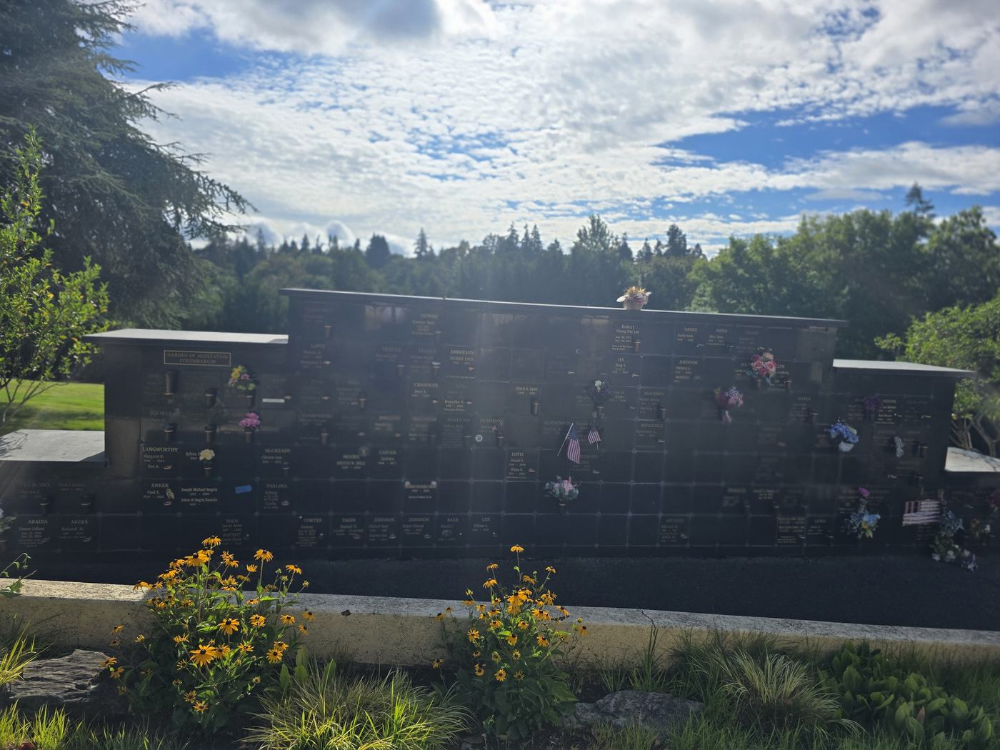
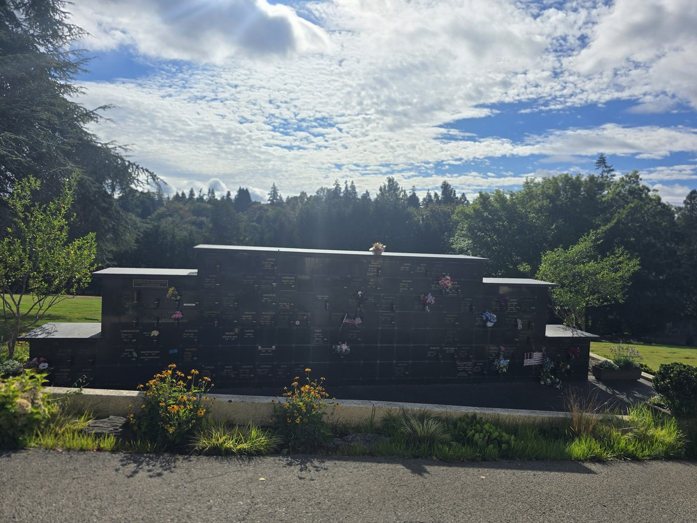

Garden of Meditation Niches
The Wall

The Garden of Meditation niches are a single stepped wall of polished black granite, set into a planted garden with a low kerb and a bed of flowering perennials along the front. It steps up from low wings at either end to a taller centre section. The plates and the vase holders are bronze.
It is a garden rather than a building. There is no roof, no courtyard and no room — you stand on the path in front of the wall with the lawn and the trees behind you. In summer the bed in front of it is in flower.
Its official property address is GOM-1-1-ROW-SPACE, so a specific niche reads as, for example, GOM-1-1-C-7. Rows run A at the bottom to G at the top.
Sold as Companions

A Garden of Meditation niche
Every niche here is sold as a companion, with two rights of interment, and includes one niche vase. Price follows the row: the lower rows are the least expensive and the top of the centre section the most.
Because of the size of the niche, the Interlude Urn is required — two of them fit. The companion capacity and the urn requirement are one fact rather than two: the niche holds two people because two Interlude Urns fit in it. The Interlude Urn is $665 each plus 10.4% sales tax. It is merchandise, quoted alongside the niche rather than charged as a fee, and it is worth bringing into the urn conversation early rather than choosing an urn first.
Open the Garden of Meditation niche map to see the wall row by row with the exact price and today’s status of every niche.
Two Rules for This Wall
Up to two inscriptions may be added to the front of a companion niche — one for each person.
What It Costs
Opening and closing, recording, endowment care and any inscription are charged in addition to the price of the space. They are straightforward, and they differ by location and by what you choose — call or email me and I will put the exact figures in writing for you, with no obligation.
| Opening & closing, each inurnment | $875 |
| Recording fee, each | $235 |
| Inscription, each — up to two on the niche front | $660 |
| Endowment Care Fund | 10% |
| Sales tax, on the inscription charge and on the Interlude Urn | 10.4% |
About these charges. The amounts above follow the Mountain View Columbarium, June 2026 schedule, confirmed 2026-07-31. They are not the older amounts printed on this location’s own sheet — they replace the older ones printed on the sheet, and they are the current ones. Your family service director will confirm the current charges before quoting.
What Is Available Now
18 of the 168 niches on the wall are for sale today, in the $5,995, $6,995 and $8,995 rows. Only part of the wall is offered at any one time, and this is an established garden rather than new inventory — so the row and the height still available today may not be there in a month.
Open the Garden of Meditation niche map to see exactly which niches are available and what each one costs.
Coming to See It
Open the Garden of Meditation niche map · Compare all three granite-front locations
Ranges in this guide are computed from the price and availability data behind our live niche maps and are re-checked against them automatically whenever this page changes. They describe what is currently offered for sale, and a range moves as spaces sell. The exact price of a specific niche, and today’s availability, are always the ones your family service director confirms for you.